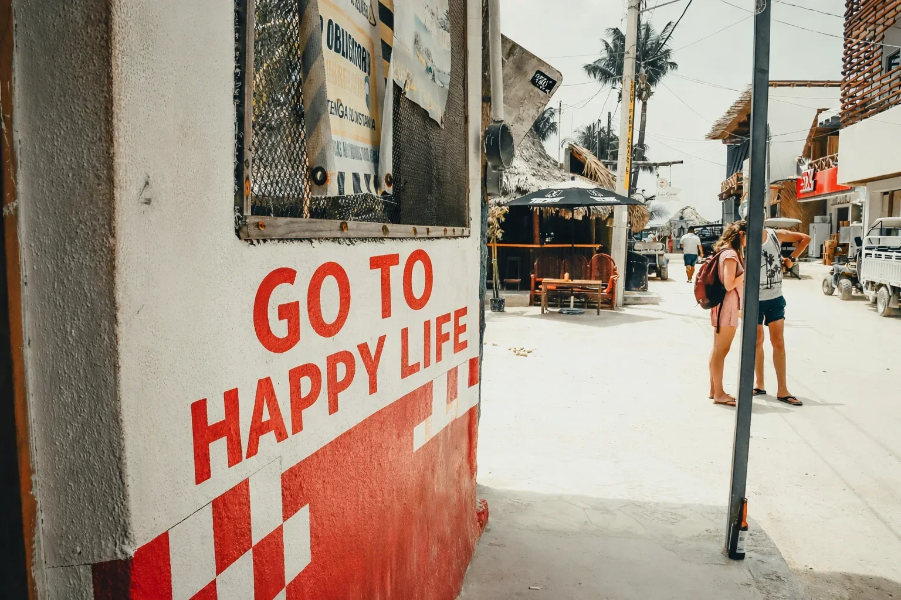

外部任せにしなかった理由
寄付プラットフォームは便利です。
多くの人に届ける力もあります。
一方で、
そこにはどうしても「距離」が生まれます。
- お金の流れが見えにくい
- 意思決定に時間がかかる
- 現場の判断が反映されにくい

HOW WE SUPPORT
なぜ、私たちは「自社の寄付プラットフォーム」を持つのか
GO TO HAPPY LIFE は、
寄付を集めるために活動している団体ではありません。
事業を完成させるために、支援を必要としている団体です。
だから私たちは、
寄付の仕組みを外部に丸投げしない選択をしました。
寄付プラットフォームは便利です。
多くの人に届ける力もあります。
一方で、
そこにはどうしても「距離」が生まれます。
現場で動く団体にとって、その距離は致命的になる。
そう判断しました。
GO TO HAPPY LIFE は
寄付を受け取り社会課題を解決する
NPO法人です。
プロジェクトは
パートナー企業と連携して企画され
医療・福祉の現場で
実際の支援として実装されます。
支援は、
私たちの口座に直接入り、
私たちの判断で、
私たちが責任を持って使います。
GO TO HAPPY LIFE は、
すべてを自団体だけで完結させようとは考えていません。
社会課題の解決には、
公益・事業・現場、それぞれの専門が必要です。
だから私たちは、
役割を明確に分けた構造を取っています。
「誰が何をして、誰が責任を持つか」を曖昧にしません。
支援金の流れは、シンプルです。
外部の「財団口座」や
実体の見えない中継先は存在しません。
これは、
団体にとっては厳しい構造です。
でも私たちは、
厳しい構造こそが、支援者の安心につながると考えています。
「信じてください」とは言いません。
それらを、
見える形で置いておくことが、
私たちのやり方です。
GO TO HAPPY LIFE は、
寄付を「ゴール」にしません。
完成させるところまでが、私たちの仕事です。
GO TO HAPPY LIFE は、寄付を直接受け取ります。
※目的に応じて外部プラットフォームを利用する場合もあります
外部寄付プラットフォームは、
多くの人に活動を知ってもらうための有効な手段のひとつです。
実際、
私たちも目的に応じて活用することがあります。
ただし――
GO TO HAPPY LIFE が最も重視しているのは、
事業を最後まで完成させることです。
寄付が集まった瞬間をゴールにせず、
現場に残る形になるまで責任を持つ。
そのためには、
これらを団体の中で完結させる必要があると判断しました。
正直に言えば、
この仕組みは団体側にとってかなり厳しい。
すべて自分たちに返ってきます。
でも私たちは、
その厳しさこそが、支援者の安心につながると考えています。
GO TO HAPPY LIFE は、
「完成させる責任」を選びました。
支援の方法は選べる。
でも、責任の持ち方は選び続けなければならない。
このやり方は、
簡単ではありません。
管理も、説明も、責任も、
すべて自分たちに返ってきます。
それでも私たちは、
自分たちの名前で、最後までやり切る
この構造を選びました。
支援の仕組みについて、ご質問があればお気軽にお問い合わせください。
お問い合わせ